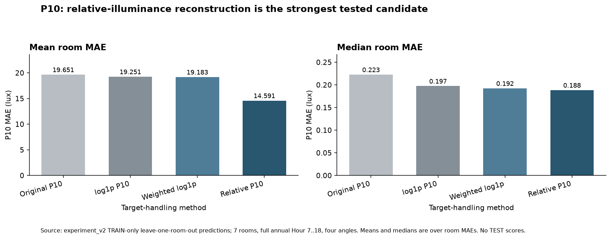
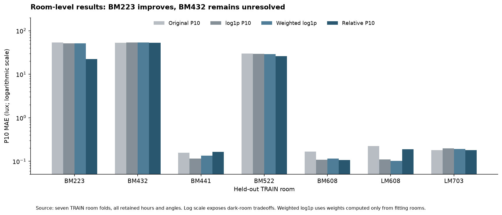
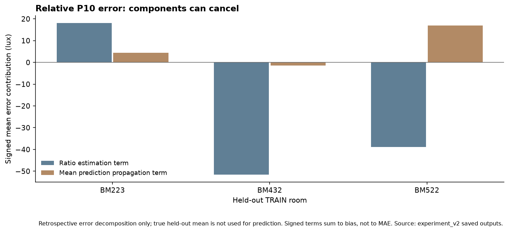

相对照度方案的平均 MAE 下降约 25.7%，优于尺度加权方案；但 BM432 仍未解决，BM223 也仍不够准确。
固定 13 个原始输入和 HistGB 参数，周期编码后为 15 列。原始 P10 与普通 log1p 为冻结参考；新增尺度加权 log1p 和相对照度两种方法。平均照度复用前次相同折的 log1p 模型，逐一核对训练房间与模型哈希，不重复训练。
尺度加权：各折仅根据 6 个拟合房间计算 w ∝ 1/sqrt(1+该训练房间的平均 P10)，将训练样本权重均值归一化为 1。留出房间的 P10 尺度不参与权重。
相对照度：训练目标为 r=P10/(E_mean+1 lux)；预测时使用 P10_hat=max(r_hat,0)×(E_mean_hat+1 lux)。真实留出均照度没有传入模型或预测重建。r 不是 F_UDI 一类的空间比例，没有强制截为 0–1。
| 方法 | 平均 MAE lux | MAE 中位数 lux | 平均 RMSE lux | 最差房间 MAE lux | 较原始 MAE 降低 | 改善房间数 |
|---|
主要指标均为原尺度 lux。房间等权平均，保留逐房间代价；开发折上的改进不是最终独立测试结果。约 的总体 MAE 降低来自 BM223。

| 留出房间 | 原始 P10 | 普通 log1p | 尺度加权 log1p | 相对照度还原 |
|---|

| 方法 | MAE lux | RMSE lux | R² | 偏差 lux |
|---|
沿用的平均照度 log1p 模型平均 MAE 为 lux。下表为预测完成后的误差分解：P10_hat−P10 = (r_hat−r_true)×(E_mean_true+1) + r_hat×(E_mean_hat−E_mean_true)。
分解时用真实标签只是为了分析误差，未用于模型预测。两项有正负且可以抵消，绝对项均值不能相加为 MAE。
| 房间 | 比值项绝对均值 lux | 均照度传递项绝对均值 lux | 实际 P10 MAE lux |
|---|

尺度加权只比普通 log1p 的平均 MAE 额外改善约 0.35%，BM223 基本不变，因此不作为首选。
相对照度的平均 MAE 为 14.59 lux，较原始模型下降 25.7%，较普通 log1p 下降 24.2%，7 个房间中有 6 个优于原始模型。BM441 比原始模型增加约 0.009 lux；相对于普通 log1p，BM441 和 LM608 仍有误差增加。
BM223 从 53.59 降至 22.49 lux，但仍远大于其真实均值约 0.62 lux。BM432 仍为 53.09 lux，没有实质解决。其误差主要来自比值模型，不能只靠优化均照度来修复。
BM522 的 P10 改善中存在“比值低估”与“均照度高估”的相互抵消，不能把这种抵消当作已经学对物理关系。
保留 均照度 log1p + 相对照度 P10 作为下一步主候选；不增加尺度加权的复杂度。此决定是开发阶段的候选选择，尚不支持部署或整栋楼准确性结论，也没有重训最终全 7 房间模型。
继续只用现有数据时，应重点研究相对照度的房间迁移与均照度误差传递，并报告所有 7 个房间的表现；不为 BM223 或 BM432 写使用真实输出的特例规则，不使用最终 TEST 反复试验。